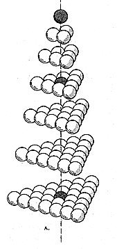

Loeb's modulehedra, in a tetrahedral arrangement

a tetrahedral lattice is composed of stacks of triangular lattices
Tetrahedral numbers enumerate the number of points,
as a tetrahedral lattice grows larger.
|
⬉
triangle numbers |
tetrahedral lattice |
⬈
what's a 4D triangle? |
|
Loeb's modulehedra, in a tetrahedral arrangement |
 a tetrahedral lattice is composed of stacks of triangular lattices |
|
|
what's a 4D triangle? ⬋ |
|
more ways to derive quanta modules ⬊ |

a tetrahedral lattice of order 2, with octahedron core (black) |

a larger tetrahedral lattice can create a few other polyhedra |
|

quanta A module from tetrahedron (left), quanta B module from octahedron (right).